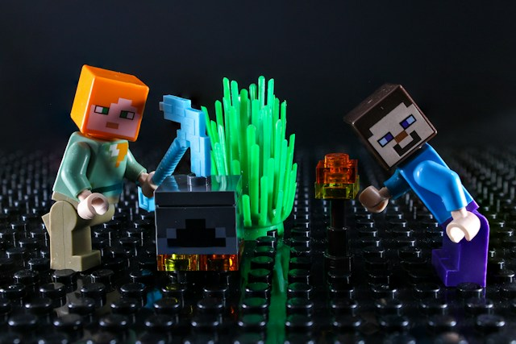

Surviving My First Night

Your first night in Minecraft is all about speed. As the sun starts to dip, you need to punch a few trees, craft a workbench, and make a basic wooden pickaxe before the mobs start appearing. I learned the hard way that wandering around at dusk is a bad idea, and a creeper made sure I never forgot it.
Once I had enough wood and a little cobblestone, I dug into the side of a hill, sealed the entrance with a block, and placed a torch inside. It was cramped, but it was safe. I spent the rest of the night mining a small tunnel and collecting coal so that the next day would start off much easier.